Sedan Rental
Swift Dzire & similar — smooth, economical city and highway rides.
Premium cab and taxi service on both directions — Bangalore to Mysore and Mysore to Bangalore. Doorstep pickup, verified drivers, GPS-tracked vehicles and transparent fares for one-way drops, round trips, same-day returns and multi-day tours via Ramanagara, Channapatna, Maddur, Mandya and Srirangapatna.
One of Karnataka's most travelled highways, connecting the IT capital with the heritage city of palaces. Choose the trip style that matches your plan.
From quick one-way drops to grand wedding fleets — we arrange the right vehicle for every kind of journey.
Swift Dzire & similar — smooth, economical city and highway rides.
Creta, Ertiga & Fortuner — spacious comfort for family trips.
Executive MPV with captain seats — ideal for business travel.
12 to 17 seater for big groups, pilgrimages and college trips.
Luxury 13 & 17 seater with pushback seats, LED TV & dual AC.
Premium sedans & SUVs for VIP guests and special occasions.
24/7 pickup & drop to Kempegowda Airport with flight tracking.
Employee shuttles, client visits and monthly accounts with GST invoices.
Decorated fleets for bridal cars, guests and family functions.
Conferences, concerts and group outings — moved on time.
Coorg, Ooty, Wayanad, Bandipur and everywhere in between.
Build your own itinerary — we plan the route, timing and cabs.
Doorstep pickup anywhere in Bengaluru — from your home, office, hotel or airport. Reach Mysore Palace and the city's top attractions comfortably, with en-route stops at your pace.

We pick you up from any hotel, resort, palace gate or station in Mysore and drop you right at your doorstep — including the airport and every major Bengaluru locality.
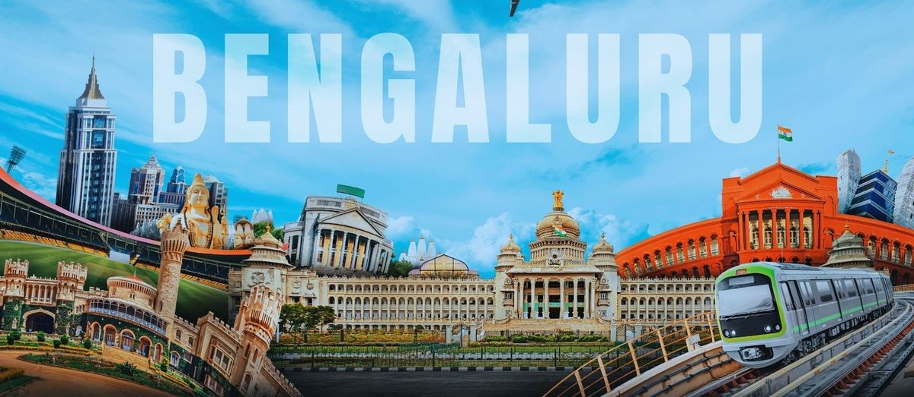
Every vehicle comes with a verified driver, air conditioning, GPS tracking and charging ports — clean, sanitized and ready.
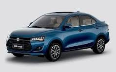
Sedan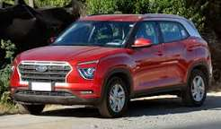
SUV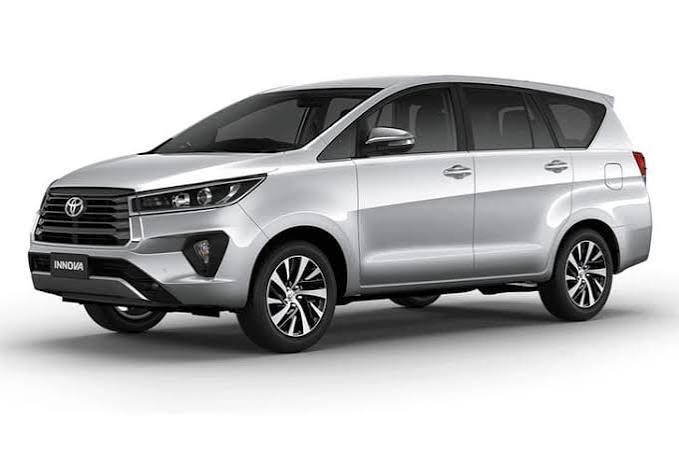
Premium MPV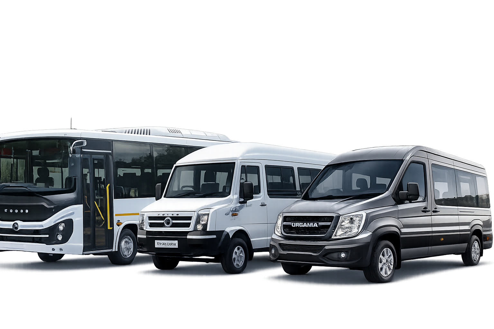
Tempo Traveller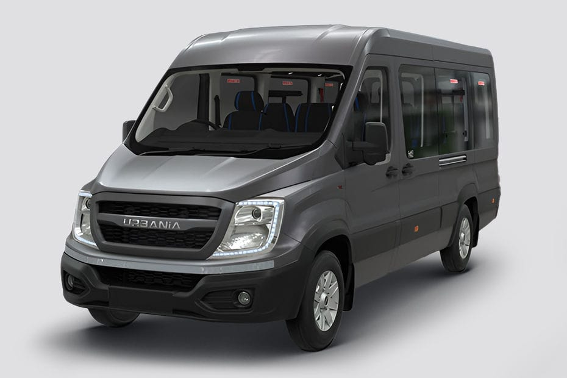
Force Urbania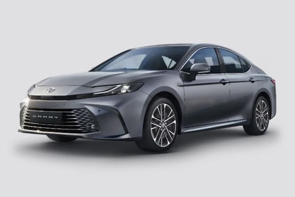
LuxuryClear fares with no hidden surprises. Driver, fuel and GST are explained upfront — tolls, parking and night charges billed as per usage.
from ₹2,400
8 hours / 80 km in Bangalore or Mysore
from ₹2,200
Bangalore ↔ Mysore single drop
from ₹3,900
Bangalore ↔ Mysore with return
Final fares depend on distance, duration, travel dates, tolls, parking and seasonal demand. Call +91 90199 93283 for an exact quotation.
Ten reasons thousands of travellers pick us for their Bangalore–Mysore journeys — every single time.
Our desk is awake around the clock for quotes, changes and help.
Background-checked, experienced chauffeurs who know both cities.
Live tracking on every ride for safety and punctuality.
Deep-cleaned cabins before every trip, every time.
Honest rates that fit every budget — no last-minute shocks.
Clear quotations and GST invoices on every completed trip.
Punctual arrivals with flight and train tracking where needed.
Insured fleet and defensive-driving trained chauffeurs.
Premium vehicles for business, weddings and VIP travel.
Confirm in minutes over call, WhatsApp or the booking form.
The NH-275 is a feast for the senses — silk, toys, sweets and history. Ask your driver to pause at any of these gems.
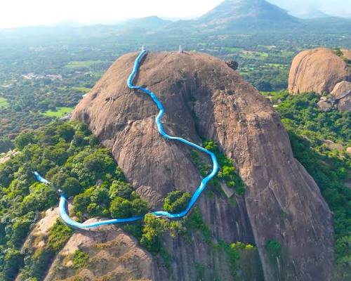
50 km from BLRSilk city and the iconic rock formations from the movie Sholay.
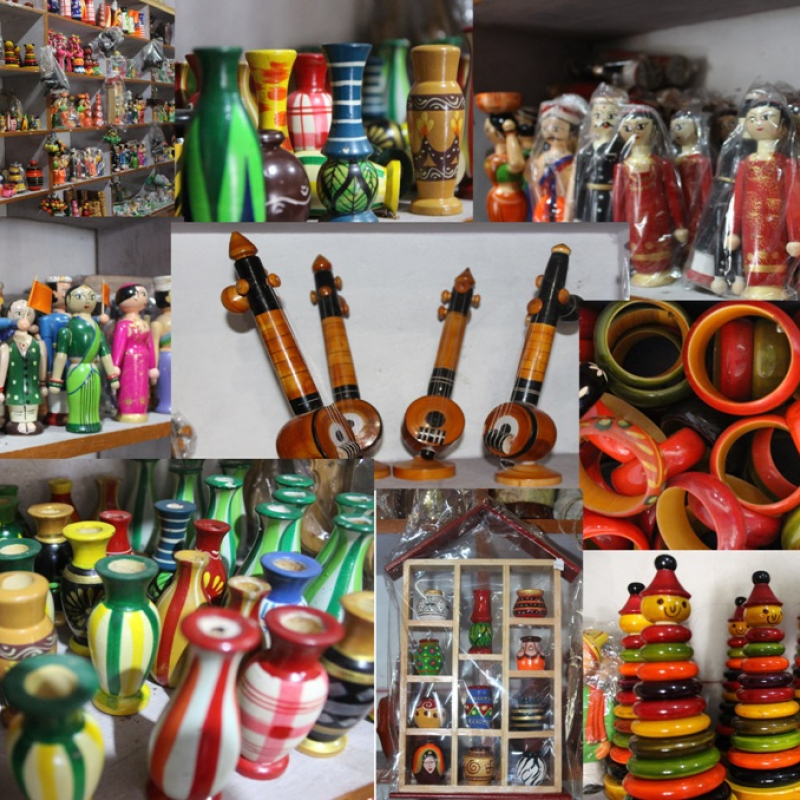
60 km from BLRFamous for colourful lacquer toys and wooden handicrafts.
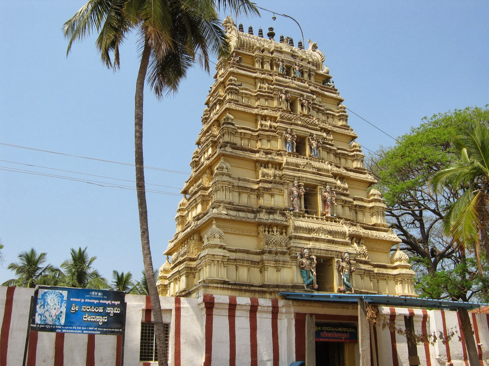
88 km from BLRHome of the famous Maddur vada — a must-stop snack break.
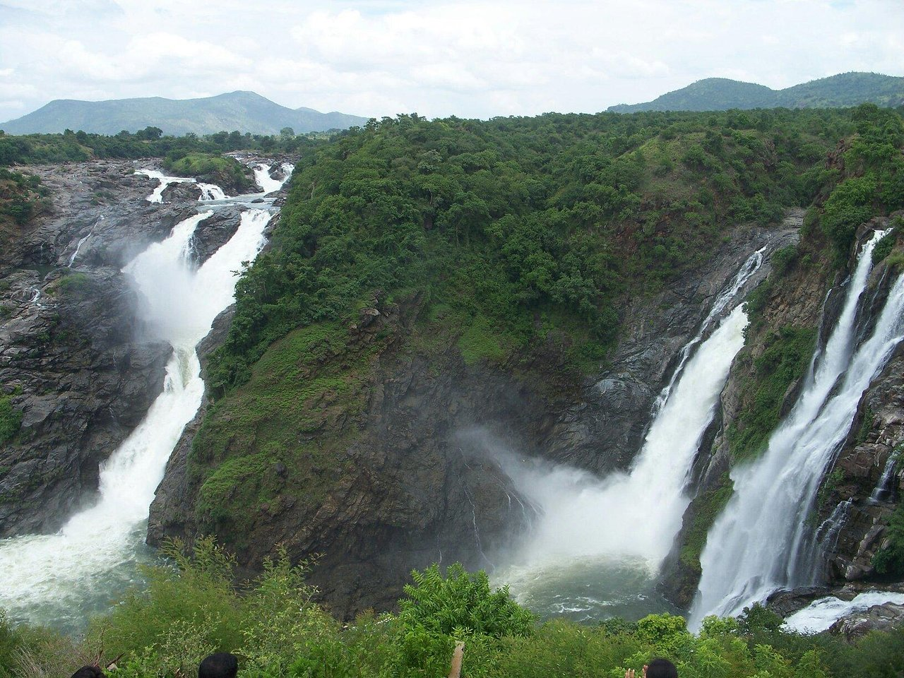
100 km from BLRThe sugar bowl of Karnataka with lush sugarcane fields.
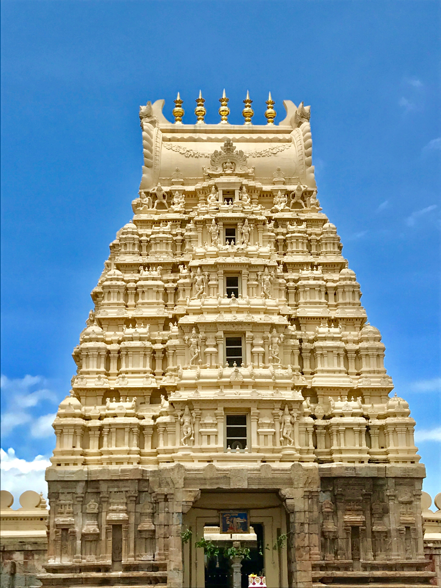
120 km from BLRThe historic island fort of Tipu Sultan, rich in heritage.
151 km from BLR
The grand finale — a palace of breathtaking beauty.
Extend your Mysore trip into a full holiday. Choose a package and we'll handle the cabs, timing and route planning.
 1–2 Days
1–2 Days
Palace, Chamundi Hills, Brindavan Gardens & zoo on a perfect day trip.
Book This Package 3–4 Days
3–4 Days
Misty coffee estates, Abbey Falls and Madikeri forts after Mysore.
Book This Package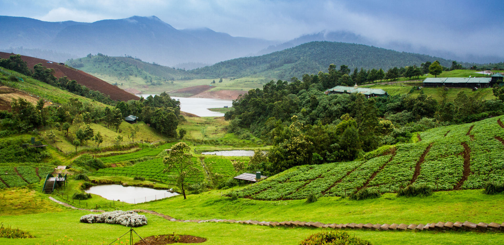
4–5 DaysNilgiri hills, boating lakes and Botanical Gardens in one itinerary.
Book This Package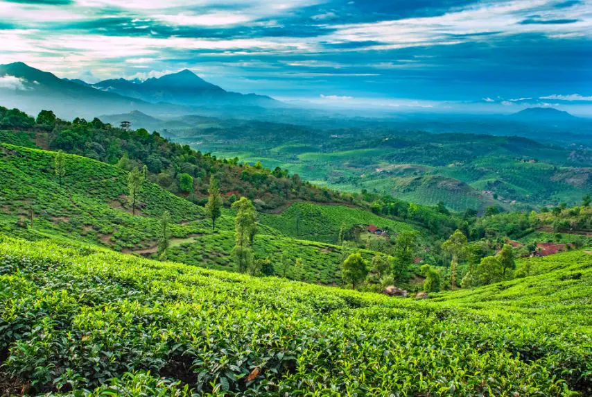
4–5 DaysKerala's spice trails, waterfalls and wildlife sanctuaries.
Book This Package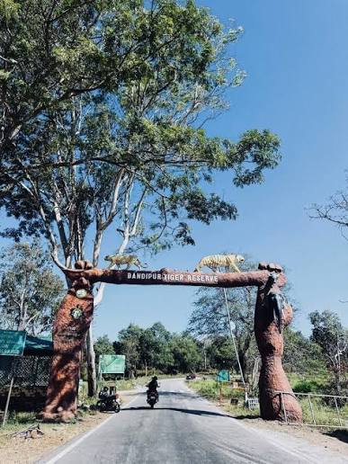
2–3 DaysJungle safaris and wildlife sightings in the tiger reserve.
Book This PackageDon't see your trip? Tell us your plan and we'll design the perfect package.
Plan My TripReal reviews from customers who travel with us in both directions — Bangalore to Mysore and back.
Quick answers about fares, trips and bookings on the Bangalore–Mysore route.
Sedan one-way fares start around ₹2,200, SUV from ₹2,800, Innova Crysta from ₹3,200 and Tempo Traveller from ₹5,500. Final fare depends on your pickup point, travel date and tolls.
Yes. We run one-way drop cabs in both directions — Bangalore to Mysore and Mysore to Bangalore — with fixed drop charges and a professional driver included.
A round trip covers both legs — onward and return — with the same vehicle, driver and fuel. You can plan a same-day return or stay for a few days in Mysore.
Absolutely. Our 12, 17 and 18 seater Tempo Travellers are perfect for family outings, pilgrimages, college trips and corporate groups on the Bangalore–Mysore route.
Yes. Our premium 13 and 17 seater Force Urbania with pushback seats, dual AC and LED TV is available for both directions and multi-day tours.
Yes. Luxury sedans and SUVs are available for weddings, corporate executives and VIP guests, complete with a professional chauffeur.
Yes. We arrange 24/7 pickup and drop between Kempegowda International Airport and Mysore with flight tracking and free waiting time.
Yes. We offer dedicated cabs for corporate and employee travel with professional chauffeurs, transparent billing and GST invoices for easy accounting.
The driver's services are always included. For multi-day or outstation trips, a driver allowance (bata) applies and is clearly shown in your quotation before you confirm.
Fill in the booking form on this page, WhatsApp us, or call +91 90199 93283. You'll receive instant confirmation with the driver's details.
Toll charges on NH-275, parking fees and night charges (10 PM – 6 AM) are billed as per usage. All extras are disclosed in your quotation before booking.
Yes. Our drivers are happy to stop at popular points like Maddur for vada, Channapatna for toys and Srirangapatna for sightseeing — just let us know your plan.
Secure your Sedan, SUV, Innova Crysta, Tempo Traveller or Urbania now — with verified drivers, transparent pricing and 24/7 support in both directions.